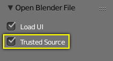
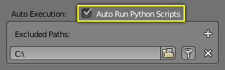

Troubleshooting¶
Some common problems people may run into when using drivers.
Scripted Expression¶


Info Header.
By default Blender will not autorun Python scripts.
If using a Scripted Expression Driver Type, you will have to open the file as Trusted Source, or set Auto Run Python Scripts in .

File Browser. |

|
Rotational Properties are Radians¶
Parts of the User Interface may use different units of measurements for angles, rotation. In the Graph Editor, while working with Drivers, all angles are Radians.
Intra-armature Bone Drivers Can Misbehave¶
There is a well-known limitation with drivers on bones that refer to another bone in the same armature. Their values can be incorrectly calculated based on the position of the other bone as it was before you adjust the current_frame. This can lead to obvious shape glitches when the rendering of frames has a jump in the frame number (either because the blend-file is currently on a different frame number or because you are skipping already rendered frames).